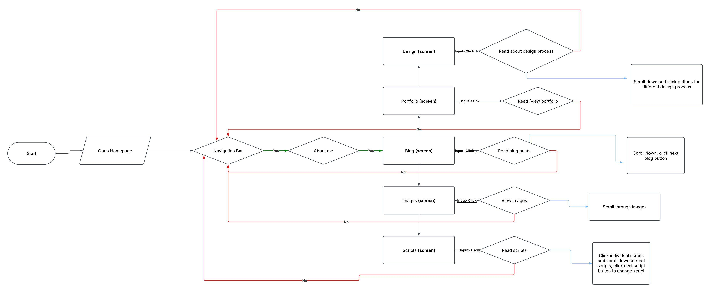
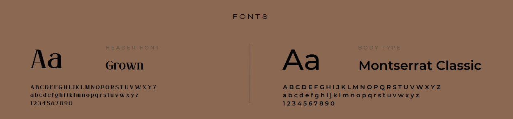

Documentation of Your IxD Process
The goal of my website is for users to understand who I am as a designer. It should be clear, understandable, accessible, and warm. I didn’t just want it to feel functional—I wanted it to feel like me. That meant stripping things back, looking at each component individually, and asking if it matched the tone and purpose I had in mind.
Content Mapping

User Flow – Screens, Behaviour, and Decisions
Style Process Documentation
This is my initial design. I like the warm colors but haven’t fully implemented the palettes yet. I want it to feel even warmer. After trying out different shades, I realized some combinations felt off. They clashed more than I expected, which pushed me to dive deeper into colour theory. I’m still experimenting, but the sketches helped me get closer to a look that feels intentional and expressive.


Fonts
I chose ‘Grown’ for headings because it adds personality and makes a statement without being too loud. It matches the slightly playful but grounded feeling I want. For body text, I went with ‘Montserrat Classic’—it’s clean, modern, and easy to read. Together, they balance each other out and give the design both character and clarity.
Colours – Theory and Relationships
Overall Colour Palette – At first, I was unsure about using brown. It’s not a typical web colour, and I worried it might make the site feel dull. But after researching sites like Art4Web, I realized brown could feel warm, earthy, and rich if used well. That inspired me to lean into it more and refine the combinations to bring out the softness of yellows and oranges alongside deeper browns.
Primary Colour Palette

I chose warm colours (yellow, orange) because they are inviting and harmonious (analogous). I want the palette to feel like sunlight on paper—cozy, not loud. I still plan to refine the yellows so they don’t feel too harsh on white backgrounds.
Secondary Colour Palette

The secondary palette provides contrast. Orange and blue are complementary and make elements stand out visually. I'm trying to use this to highlight interactive elements like buttons and links while keeping the rest of the site calm and soft. It’s a work in progress, but I’m getting closer to the tone I want.
Composition – Hierarchy, Balance, Harmony
The layout is center-aligned and symmetrical for harmony. Repeated circular elements reflect my design goals. I want users to feel guided as they scroll, like the design is holding their hand rather than overwhelming them. But I might need to adjust spacing and sizing more because parts still feel a bit floaty.
Interface Elements – Shape, Colour, Position
I use circular, rounded shapes to maintain a warm and welcoming vibe. I noticed that when everything had sharp edges, the tone shifted into something too corporate. Rounded buttons and containers brought it back into something friendlier—more me.


Reference Material
I appreciate circular designs that promote comfort and calmness. I looked at sites with soft borders, organic shapes, and friendly typography. They made me realize that usability doesn't have to be cold or neutral—it can feel expressive too.
Pixcap helped guide my colour choices:
- Warm colours (red, orange, yellow) evoke excitement and joy.
- They highlight key elements like buttons and CTAs.
- They make users feel welcome and linger longer.
- They support a friendly, energetic brand identity.